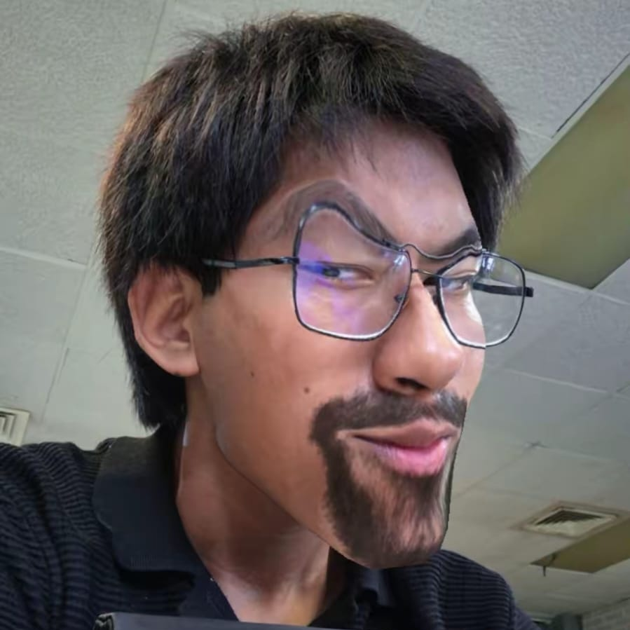

Olaaaaaaaaaa
Publicado por Arturo |

Ficha de Presentación
Olaaa este es mi blog y aqui yo voy a compartir lo que se me de la gana, me vale lo que piensen, asi que sientate ve por unos takis y una cocona bien fria y disfruta de verme perder la cordura.
- Nombre completo:
- Rodrigo Arturo Reyes Rodríguez
- Fecha de nacimiento:
- Idiomas en practico:
- Español (con insultos y trabado), Inglés (rascuacho) y Francés (por desgracia)
- Compañera felino:
- Cake (mejor que muchos de ustedes en cualquier sentido)
Cosas que hago
TO DO para no caer en la locura tan rapido:
- GYMcito: Pesado y al fallo.
- Pelearme: Práctico taekwondo y Muay Thai (me gusta agarrarme a golpes con la gente, tambien me peleo con niños en Roblox).
- Descanso reparador: Dormir todo el perro dia hasta que se me ocurra hacer algo más (en resumen: me la paso durmiendo).
"Pablito clavo un clavito en la calva de un calvito"
— Para pensar eh